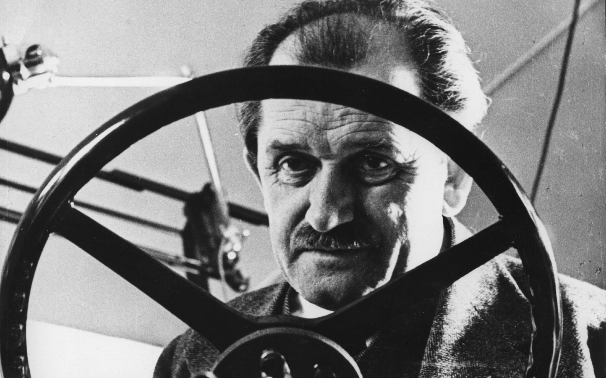
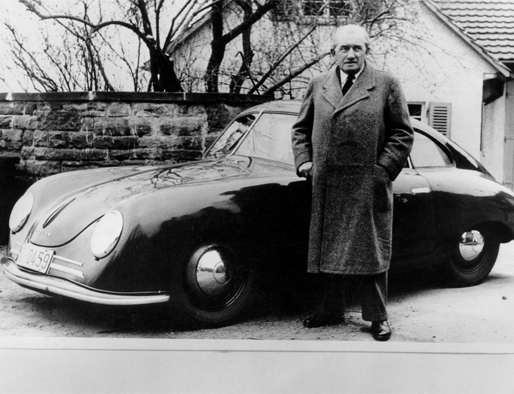
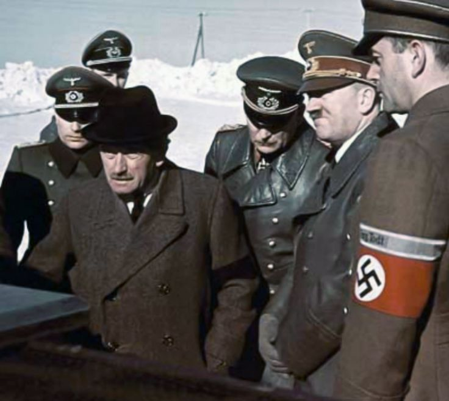
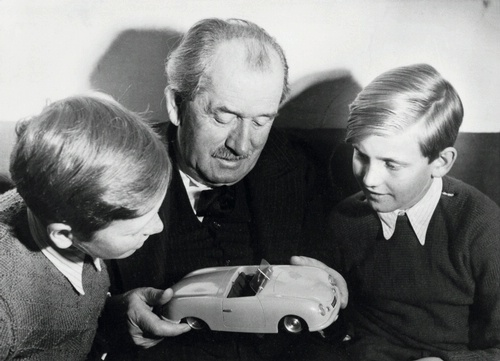
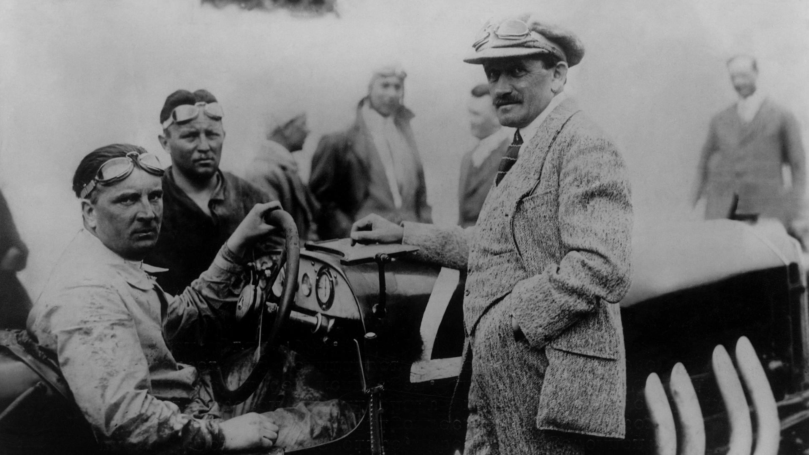
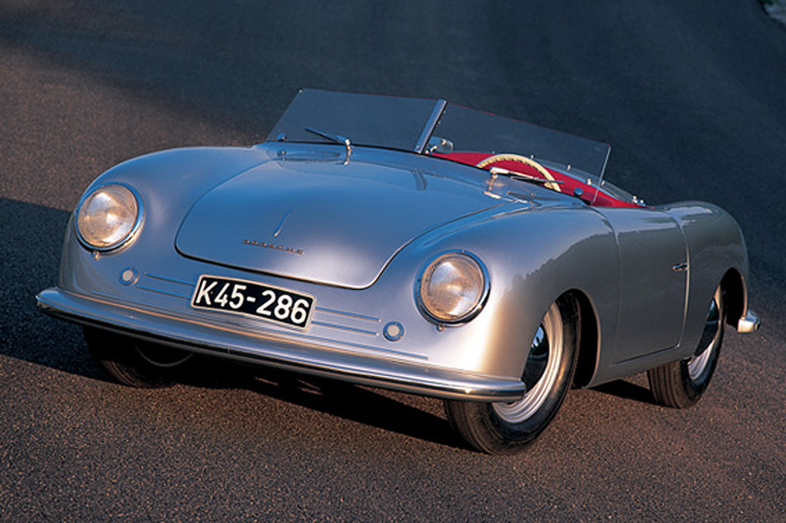
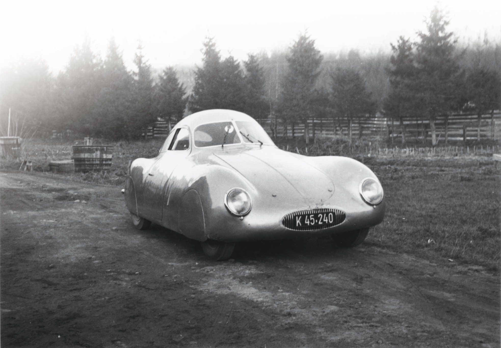
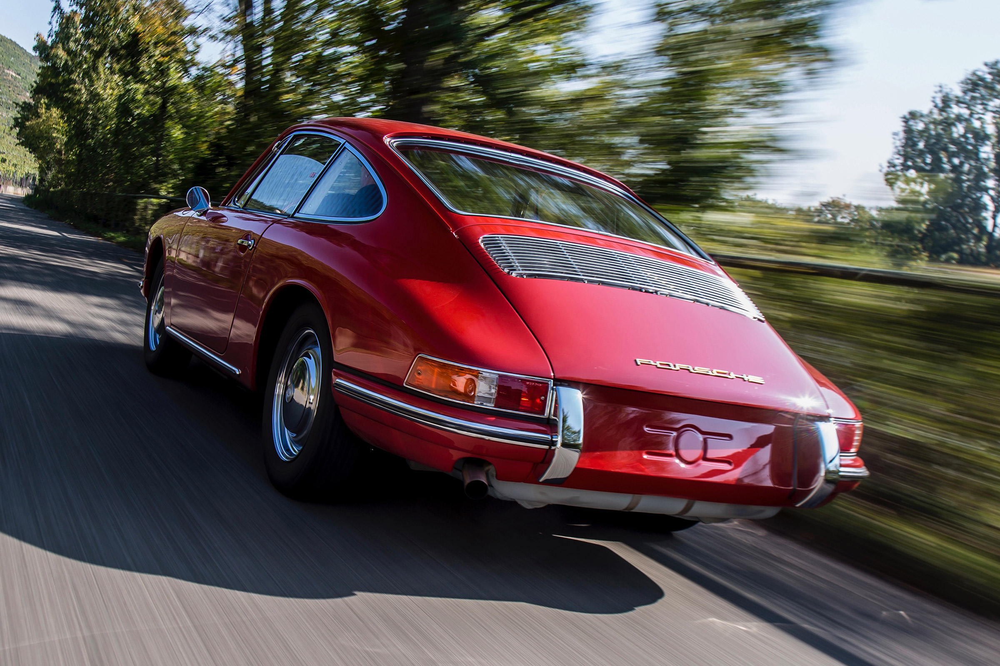
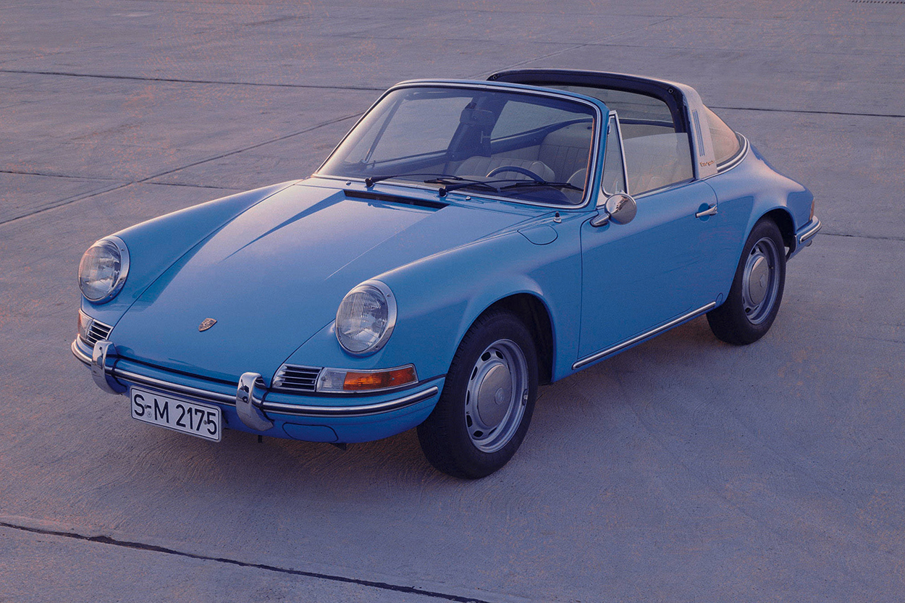
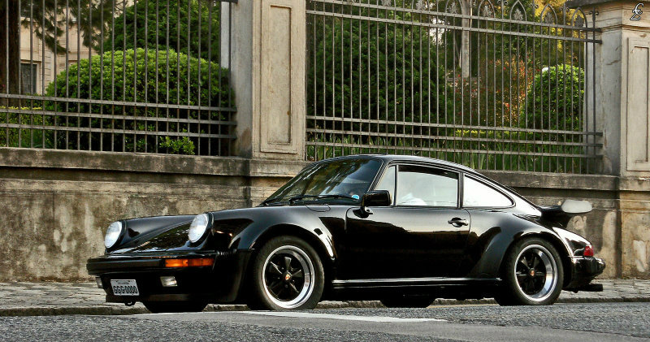

 Ferdinand Porsche nascido em 03 de setembro de 1875 e falecido 30 de janeiro de 1951 foi um engenheiro automotivo e fundador da empresa de automóveis Porsche . Ele é mais conhecido por criar o primeiro veículo híbrido gasolina- elétrico ( Lohner-Porsche ), o Fusca , o Mercedes-Benz SS / SSK , vários outros desenvolvimentos importantes e automóveis Porsche. Um importante contribuinte para o esforço de guerra alemão durante a Segunda Guerra Mundial. A Porsche estava envolvida na produção de tanques avançados como o VK 4501, o Tigre I , o Tigre II , o Elefant e o Panzer VIII Maus , bem como outros sistemas de armas, incluindo a bomba voadora V-1. Porsche era um membro do Partido Nazista e, supostamente, da SS . Ele recebeu o Prêmio Nacional Alemão de Arte e Ciência , o SS-Ehrenring e a Cruz de Mérito da Guerra e foi chamado de "Great German Engineer" por oficiais nazistas. A Porsche foi introduzida no Hall da Fama do Automobilismo Internacional em 1996 e ganhou o prêmio de Engenheiro de Automóveis do Século em 1999. Ferdinand Porsche nasceu de pais alemães étnicos em Liberec ( alemão : Reichenberg ), no norte da Boêmia , parte da Áustria-Hungria na época, e hoje faz parte da República Tcheca .Ferdinand foi o terceiro filho de seus pais. Seu pai, Anton Porsche, era um mestre do painel . Ele mostrou uma forte aptidão para o trabalho mecânico em uma idade muito precoce. Ele assistiu às aulas na Escola Técnica Imperial em Reichenberg ( Checa : Liberec ) à noite enquanto ajudava seu pai em sua oficina mecânica durante o dia. Graças a um encaminhamento, a Porsche conseguiu um emprego na empresa Béla Egger Electrical, em Viena, quando completou 18 anos.Em Viena, ele entrava na universidade local sempre que podia depois do trabalho. Além de frequentar aulas lá, a Porsche nunca recebeu nenhum ensino superior de engenharia. Durante seus cinco anos com Béla Egger, a Porsche primeiro desenvolveu o motor do cubo elétrico . Após o colapso do Império Austro-Húngaro no final da Primeira Guerra Mundial , ele escolheu a cidadania checoslovaca . Em 1934, Adolf Hitler ou Joseph Goebbels tornaram a Porsche uma cidadã alemã naturalizada. Em 1898, a Porsche se juntou à fábrica Jakob Lohner & Company , sediada em Viena , que produzia ônibus para o imperador Franz Joseph I da Áustria , bem como para os monarcas do Reino Unido, Suécia e Romênia. Jakob Lohner havia começado a construção de automóveis em 1896 sob Ludwig Lohner no subúrbio trans- danubiano de Floridsdorf . Seu primeiro projeto foi o veículo Egger-Lohner (também conhecido como C.2 Phaeton). Revelado pela primeira vez em Viena, na Áustria, em 26 de junho de 1898, a Porsche havia gravado o código "P1" (que significa Porsche, número um, significando o primeiro desenho de Ferdinand Porsche) em todos os componentes-chave. O Egger-Lohner era um carro parecido com uma carruagem acionado por dois motores elétricos dentro dos cubos das rodas dianteiras, alimentados por baterias. Esta construção de trem de acionamento foi facilmente expandida para tração nas quatro rodas , montando mais dois motores elétricos nas rodas traseiras, e um exemplo de quatro motores foi encomendado pelo inglês EW Hart em 1900. Em dezembro daquele ano, o carro foi exibido no Exposição Mundial de Paris sob o nome Toujours-Contente. Apesar de este veículo único ter sido encomendado para fins de corridas e quebra de recordes, seus 1.800 kg (4.000 lb) de baterias de chumbo-ácido foram uma deficiência grave. Embora "mostrasse uma velocidade maravilhosa quando era permitido correr", citação necessária ]o peso das baterias tornou lento para subir colinas. Ele também sofria de alcance limitado devido à vida útil limitada da bateria. Ainda empregado pela Lohner, a Porsche lançou o " Lohner-Porsche Mixte Hybrid" em 1901: em vez de um enorme conjunto de baterias, um motor de combustão interna da empresa alemã Daimler impulsionou um gerador que acionava os motores do cubo da roda elétrica . Como backup, uma pequena bateria foi instalada. Este é o primeiro veículo híbrido petróleo-elétrico registrado. Como engrenagens e acoplamentos suficientemente confiáveis não estavam disponíveis na época, ele optou por torná-lo um híbrido em série , um arranjo agora mais comum em locomotivas diesel-elétricas ou turbo-elétricas que em automóveis. Embora mais de 300 chassis da Lohner-Porsche tenham sido vendidos até 1906, a maioria era de tração nas duas rodas; caminhões com rodas dianteiras ou traseiras, ônibus e carros de bombeiros. Alguns ônibus de tração nas quatro rodas foram produzidos, mas não há automóveis com tração nas quatro rodas. Os veículos conseguiram uma velocidade de até 56 km por hora (35 mph), quebrou vários recordes de velocidade Austrian, e também ganhou o Rally Exelberg em 1901, com o próprio Porsche dirigir um híbrido de tracção dianteira. Mais tarde, foi atualizado com motores mais potentes da Daimler e Panhard , o que provou ser o suficiente para ganhar mais recordes de velocidade. Em 1905, a Porsche recebeu o prêmio Pötting como o engenheiro automotivo mais notável da Áustria. Em 1902, ele foi convocado para o serviço militar. Ele serviu como motorista do arquiduque Franz Ferdinand da Áustria , o príncipe herdeiro da Áustria, cujo assassinato desencadeou a Primeira Guerra Mundial uma década depois. Em 1906, a Austro-Daimler recrutou a Porsche como projetista-chefe. O mais conhecido carro austro-Daimler da Porsche foi projetado para o julgamento do Infante D. Henrique em 1910, em homenagem ao irmão mais novo de Wilhelm II , o Príncipe Heinrich da Prússia . Exemplos desse carro aerodinâmico de 85 cv (63 kW) conquistaram os três primeiros lugares, e o carro ainda é mais conhecido pelo apelido de "Príncipe Henrique" do que pelo nome de seu modelo "Modell 27/80". Ele também criou um modelo de 30 cavalos de potência chamado Maja, em homenagem a irmã mais nova de Mercedes Jellinek , Andrée Maja (ou Maia) Jellinek. Porsche tinha avançado para Diretor Gerente de 1916 e recebeu um doutorado honorário da Universidade de Tecnologia de Viena , em 1916: o título "Dr. Ing hc" é uma abreviatura de " Doktor Ingenieur Honoris Causa ". A Porsche continuou com sucesso a construir carros de corrida, vencendo 43 das 53 corridas com o seu design de 1922. Em 1923, a Porsche deixou o Austro-Daimler após as divergências sobre a direção futura do desenvolvimento do carro. Poucos meses depois, a Daimler Motoren Gesellschaft contratou a Porsche para atuar como diretora técnica em Stuttgart , na Alemanha , que já era um grande centro para a indústria automotiva alemã. Em 1924, ele recebeu outro doutorado honorário da Universidade Técnica de Stuttgart por seu trabalho na Daimler Motoren Gesellschaft em Stuttgart e mais tarde recebeu o título honorário de Professor. Enquanto esteve na Daimler Motoren Gesellschaft, ele criou vários designs de carros de corrida bem-sucedidos. A série de modelos equipados com superchargers que culminaram no Mercedes-Benz SSK dominou sua classe de automobilismo na década de 1920. Em 1926, a Daimler Motoren Gesellschaft e a Benz & Cie fundiram-se na Daimler-Benz , com seus produtos conjuntos começando a se chamar Mercedes-Benz . No entanto, as idéias da Porsche para um carro pequeno e leve da Mercedes-Benz não eram populares no conselho da Daimler-Benz. Ele partiu em 1929 para a Steyr Automobile , mas devido à Grande Depressão, a Porsche acabou sendo despedida. Em abril de 1931, a Porsche retornou a Stuttgart e fundou sua empresa de consultoria Dr. Ing. hc F. Porsche GmbH, Konstruktionen und Beratungen für Motoren und Fahrzeugbau ( conceção e consultoria de motores e veículos). Apoiado financeiramente pelo defensor austríaco Anton Piëch e Adolf Rosenberger , a Porsche recrutou com sucesso vários ex-colegas de trabalho com quem já havia trabalhado, incluindo Karl Rabe , Erwin Komenda , Franz Xaver Reimspiess e seu filho Ferry Porsche . Seu primeiro projeto foi o projeto de um carro de classe média para o Wanderer . Outros projetos encomendados seguidos. À medida que o negócio crescia, a Porsche decidiu trabalhar também no seu próprio design, o que foi um desenvolvimento do conceito de carro pequeno de seus dias na Daimler-Benz em Stuttgart. Financiou o projeto com um empréstimo em seu seguro de vida. Mais tarde, Zündapp decidiu ajudar a patrocinar o projeto, mas perdeu o interesse após o sucesso com as motocicletas. A NSU então assumiu o patrocínio, mas também perdeu interesse devido aos altos custos de ferramental. Com as comissões de automóveis escassas devido ao clima econômico deprimido, a Porsche fundou uma empresa subsidiária, a Hochleistungs Motor GmbH (High Performance Engines Ltd.), para desenvolver um carro de corrida para o qual não tinha cliente. Baseado no esquema de motor central de Max Wagner, o Benz Tropfenwagen 1923 , ou design aerodinâmico "Teardrop", o carro de corrida experimental P-Wagen (P para Porsche) foi projetado de acordo com os regulamentos da fórmula de 750 kg. O regulamento principal desta fórmula era que o peso do carro sem motorista, combustível, óleo, água e pneus não pôde exceder 750 kg (1.650 lb). Em 1932, a Auto Union Gmbh foi formada, consistindo de fabricantes de automóveis , Audi , DKW , Horch e Wanderer . O Presidente do Conselho de Administração, o barão Klaus von Oertzen, queria um projeto final , de modo que, diante da insistência do diretor Adolf Rosenberger, von Oertzen encontrou-se com a Porsche, que já havia trabalhado para ele antes. No Salão do Automóvel de Berlim de 1933, o chanceler alemão Adolf Hitler anunciou sua intenção de motorizar a nação, com cada alemão possuindo um carro ou um trator.no futuro, e revelou dois novos programas: o "carro do povo" e um programa de automobilismo patrocinado pelo Estado para desenvolver uma "indústria automotiva alemã de alta velocidade"; Para iniciar isso, a Mercedes-Benz receberia uma concessão anual de 500.000 Reichsmark . Esses projetos levaram a dois projetos para a Porsche e estabeleceram um precedente para o restante da década, com a Porsche empreendendo novos projetos para os nazistas , incluindo o tanque Tiger e o destruidor de tanques Elefant. Em junho de 1934, a Porsche recebeu um contrato de Hitler para projetar um "carro popular" (ou Volkswagen ), seguindo seus projetos anteriores, como o carro Type 12 de 1931 projetado para Zündapp . Os dois primeiros protótipos foram concluídos em 1935. Estes foram seguidos por vários outros lotes de pré-produção durante 1936 a 1939. O carro era semelhante ao design contemporâneo de Hans Ledwinka da Tatra , em particular o Tatra V570 e o Tatra 97 . Isso resultou em uma ação judicial contra a Porsche alegando violação das patentes da Tatra em relação ao resfriamento a ar do motor traseiro. A ação foi interrompida pela invasão alemã da Tchecoslováquia: vários anos após a Segunda Guerra Mundial, a Volkswagen pagou um acordo.
Desde que foi contratado pelas autoridades nacional-socialistas na construção do Volksauto , Porsche foi elogiado como o Grande Engenheiro Alemão .Hitler considerou os tchecos subumanos e a Porsche foi em 1934 instada a solicitar a cidadania alemã. Poucos dias depois, a Porsche de fato apresentou uma declaração de desistir da cidadania checoslovaca em um consulado checoslovaco em Stuttgart . Em 1937, a Porsche se juntou ao Partido Nacional dos Trabalhadores Alemães Socialistas (tornando-se membro no 5.643.287 , bem como a SS .Em 1938, a Porsche estava usando a SS como membros de segurança e motoristas em sua fábrica, e depois montou uma unidade especial chamada SS Sturmwerk Volkswagen . Em 1942, a Porsche alcançou o posto de SS-Oberführer . Durante a guerra, Porsche foi ainda mais condecorado com o SS-Ehrenring e recebeu a Cruz de Mérito da Guerra . À medida que a guerra progrediu, suas soluções propostas para novos desenvolvimentos tornaram-se mais complexas e Ferdinand Porsche ganhou reputação em certos círculos como "cientista louco", especialmente com Albert Speer (principalmente devido à sua nova afinidade com desenhos "pontudos").
Uma nova cidade, "Stadt des KdF-Wagens" foi fundada perto de Fallersleben para a fábrica da Volkswagen, mas a produção em tempo de guerra concentrou-se quase exclusivamente nas variantes militares da Kübelwagen e Schwimmwagen . A produção em massa do carro, que mais tarde ficou conhecido como o Fusca, começou após o fim da guerra. A cidade é chamada Wolfsburg hoje e ainda é a sede do Grupo Volkswagen.